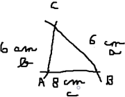
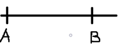
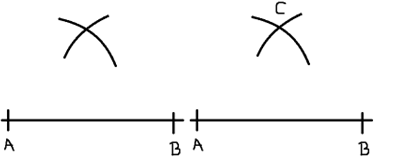
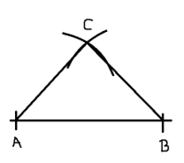

Úhly
Druhy
- Pravoúhlý - jeden úhel má pravý úhel
- Tupoúhlý - jeden vnitřní úhel je tupý
- Ostroúhlý - všechny jeho úhly jsou ostré
- Rvnoramenný - má dvě ramena, jednu základnu

Rýsování trojúhelníku
Udělám si trojúhelník a=5cm, b=8cm a c=4cm, ale nejprve musím zkontrolovat, jestli to půjde narýsovat.
Jde to takže tady je postup:
- Náčrt
- je vždy jako první, je od ruky
- do náčrtu uvedeme strany trojúhelníku: a, b nebo c (strany jsou vždy naproti vrcholu např. strana(a)a bod A) 
- Konstrukce
- úsečka 
- oblouky - později
- z bodu udělej kružítkem oblouk (jakoukoli vzdálenost) a pak to stejné v druhém bodě, pozor vzdálenost oblouku z prvního bodu musí být stejná i u druhého bodu
- kde se ti oblouky setnou tak vyznač bod C takto: 
- Konec
- všechny body nakonec spoj takto: 